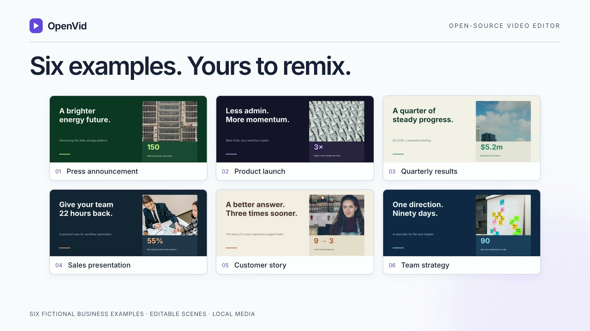
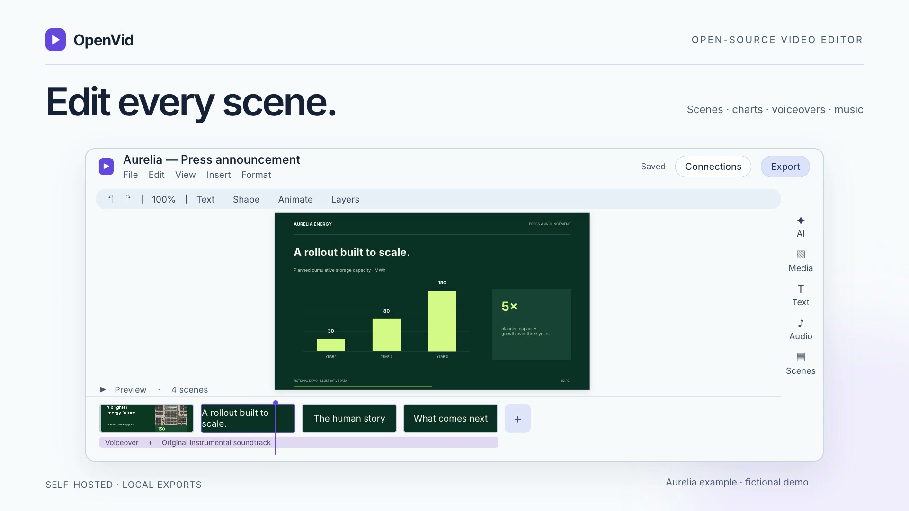
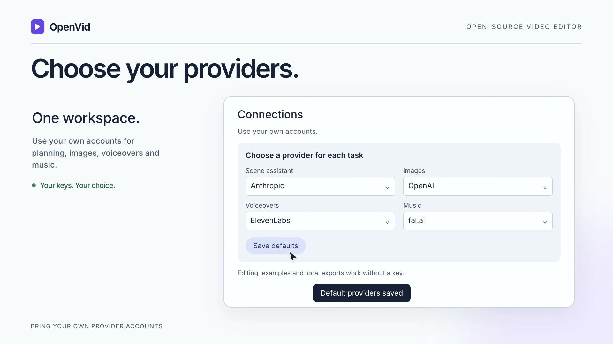

Use the six included examples. No AI key is needed to edit and render existing media.
Python 3.13+
Node.js 22+
Git and FFmpeg / ffprobe
python3 --version node --version git --version ffmpeg -version
PowerPoint import also needs LibreOffice. Follow the repository setup notes for your OS.
git clone https://github.com/hanishkeloth/OpenVid.git cd OpenVid python3 -m venv .venv .venv/bin/pip install -r requirements.txt npm ci
This creates a local Python environment and installs the pinned project dependencies.
npx hyperframes browser ensure npm run dev
Open this address in your browser. Keep the same browser profile to retain your private workspace.


Preview every scene boundary. Keep music quieter than speech and add an end fade.
Changing a headline or metric does not rewrite the existing narration.

Open the completed result and download the file. Watch and listen through the last scene.
Keep OpenVid running during the render. Local export is separate from optional paid AI generation.
ffprobe -v error -show_entries \ stream=codec_type,width,height,duration \ -of json your-video.mp4 ffmpeg -v error -i your-video.mp4 -f null -
These commands inspect streams and decode the file. Also check readability, voice timing and music volume.
Code: AGPL-3.0-only. Sample media has separate notices.
Optional AI usage is billed by your connected providers.
Early release: no Google Drive integration or live cross-workspace collaboration. Project JSON does not bundle media files.